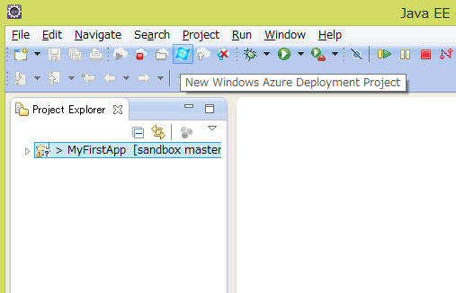
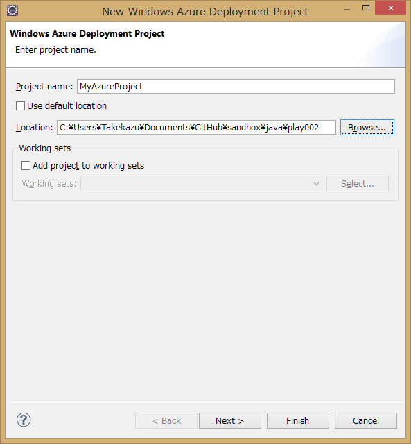
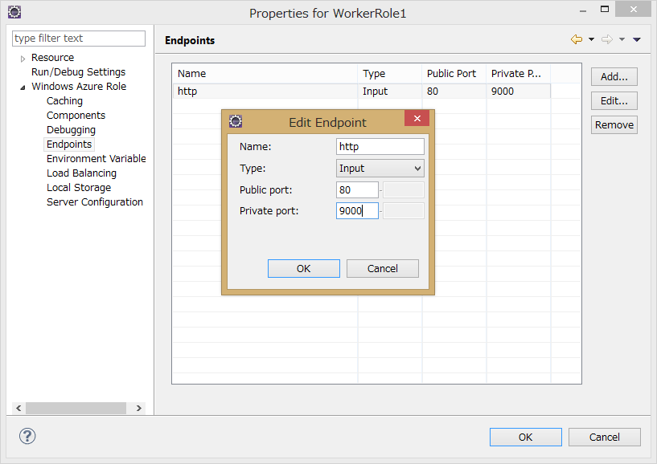
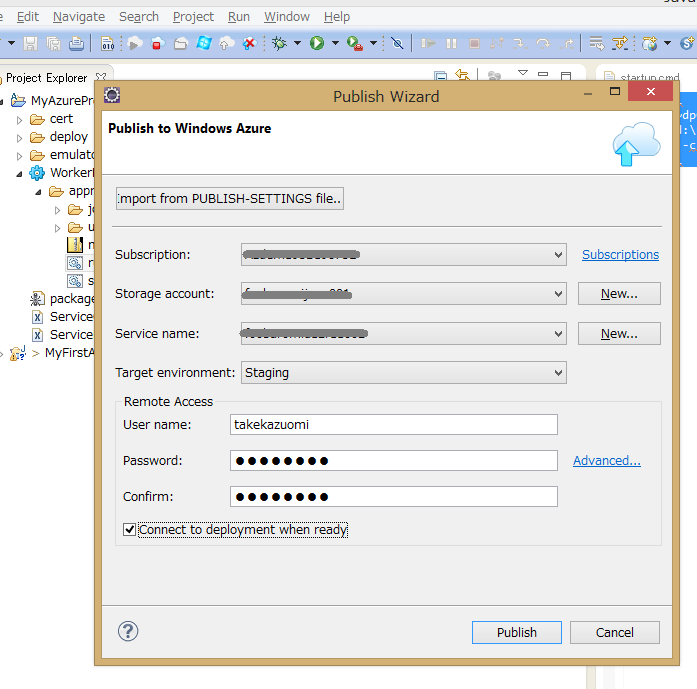
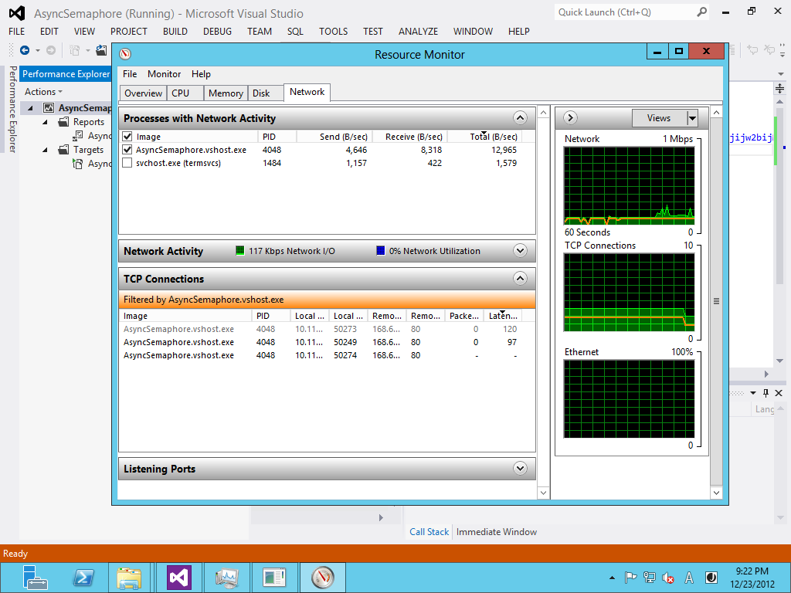
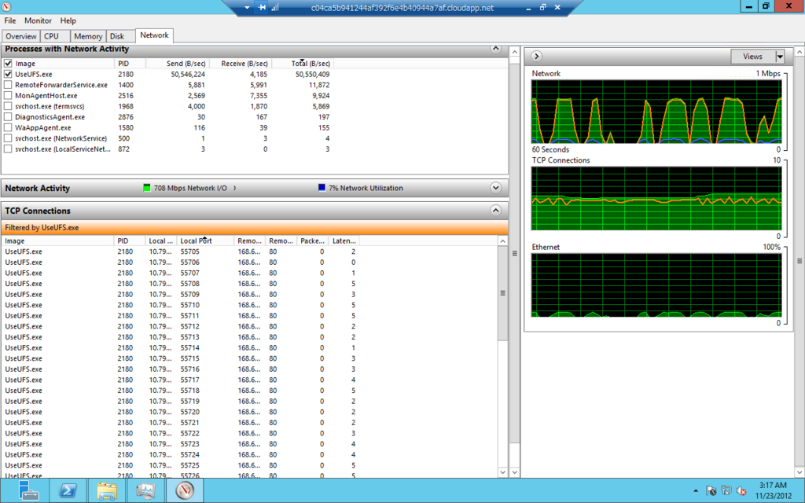

Windows Azure Plugin for Eclipse with JavaとPlay Framework 2.1
Pyay Framework 2.1のアプリを作ってWindows AzureにDeployするまでを簡単に流します。Java, Play Frameworkに付いてある程度知識があって、Windows Azureを使ってみようという人を前提としています。
必要環境
確認は下記の環境で行いました。
- Windows 8
- Java Developer Kit (JDK), v1.7
- Eclipse IDE for Java EE Developers Kepler
- Windows Azure SDK 2.1
- Play Framework 2.1
Windows Azure Plugin for Eclipse with JavaとPlay Framework 2.1の開発環境としては、JDKは1.6以降、Eclipseは、 Indigo 以降がサポートされています。Windows Azure SDKは最新（2.1）が必要です。Play Frameworkに関しては2.1.5で試しましたが、他のバージョンとの互換性は確認していません。
Windows Azure SDK 2.1のインストール
Windows Azure SDK 2.1は、Web Platform Installer 4.6経由で入れるのがお勧めです。少し慣れないと分かりづらいので説明します。
Web Platform Installerを起動して、右上の検索ボックス①にazure sdk 2.1と入力して改行すると検索結果が表示されます。その中のWindows Azure SDK 2.1② を「インストールする」して下さい。（画面はインストール後になってしまっているのですが、右端のインストールボタンを押すとインストール候補として選択されます）Visual Studio用のツールなど複数表示されますが、今回必要なのは、Windows Azure SDK 2.1だけです。
画面下の「インストール」ボタン③を押すと処理が始まります、この時に必要な依存関係も同時にインストールされます。

- Web Platform Installer 4.6 は、Microsoft Web Platform Installer 4.6からインストールできます。
もっと簡単な方法
This plugin requires Windows Azure SDK 2.1. This can be downloaded using theWeb Platform Installer (WebPI) 経由でWindows Azure SDK 2.1をインストールするplugin(exe)も配布されています。http://go.microsoft.com/fwlink/?LinkID=252838このリンク先さからダウンロードされるEXEを起動するとSDKのインストールが自動的に始まります。どちらの方法でインストールしても同じものが入ります。
Windows Azure Plugin for Eclipse with Java (by Microsoft Open Technologies)
次に、Microsoft Open Technologiesが作っている Windows Azure Plugin for Eclipse with Java を入れます。現在(2013/10/15)の最新版は、2.1.1です。プラグインのインストールは、通常のものと同じに、Help メニューのInstall New Softwareから行います。
レポジトリとして、http://dl.msopentech.com/eclipseを追加すると、Windows Azure Toolkit for Javaが表示されます。

必要に応じてライブラリを選択してください。今回はとりあえず、全部選択します。
サポートされているライブラリの種類
Windows Azure Plugin for Eclipse with Javaが、EclipseのUIとツールを提供するもので、その他のものはAzureのAPIをラップしたクラスライブラリです。
- Microsoft JDBC Driver 4.0 for SQL Server: SQL Database 用のコンポーネント
- Package for Apache Qpid Client Libraries for JMS (by MS Open Tech): Azureのメッセージングサービス向けのJMS client library （Apache Qpid project が元になっています）
- Package for Windows Azure Libraries for Java (by MS Open Tech): このコンポーネントは、Windows Azure でスケーラブルなクラウドコンピューティングを実現するためのライブラリを提供
- Windows Azure Access Control Services Filter (by MS Open Tech): このコンポーネントはWindows Azure ACS を使った認証アプリケーション向け
- Windows Azure Common Plugin (by MS Open Tech): 他のこのコンポーネントとの共通コンポーネント
- Windows Azure Plugin for Eclipse with Java (by MS Open Tech): このコンポーネントは、project configuration logic、the publish-to-cloud wizard、と user interfaceを含む
インストールに異常に時間がかかる場合は、Contact all update sites during install to find required softwareのチェックを外してみてください。
ここまでの内容は、Installing the Windows Azure Plugin for Eclipse with Java (by Microsoft Open Technologies)に詳しく書いてありますので、そちらも参照してください。
Play Frameworkのプロジェクト作成からEclipseへの取り込へ
動作確認のためにPlay Frameworkのプロジェクトを作成して、Eclipseへ取り込みます。
MyFirstAppという名前で、play frameworkのアプリを作ります。今回は全くコードは書かないので関係ありませんが言語はJavaを選択します:
$ play new MyFirstApp
_ _
_ __ | | __ _ _ _| |
| '_ \| |/ _' | || |_|
| __/|_|\____|\__ (_)
|_| |__/
play! 2.1.5 (using Java 1.7.0_25 and Scala 2.10.0), http://www.playframework.org
The new application will be created in C:\Users\Takekazu\Documents\GitHub\sandbox\java\play002\MyFirstApp
What is the application name? [MyFirstApp]
>
Which template do you want to use for this new application?
1 - Create a simple Scala application
2 - Create a simple Java application
> 2
OK, application MyFirstApp is created.
Have fun!
eclipseのプロジェクトを作ります。先ほど作成したアプリのディレクトリに移動してeclipseのプロジェクトを作成します。 普通の開発ならば、eclipse with-source=trueの方が良いかもしれませんが、今回はダウンロード時間の節約でソースは持ってきません:
$ cd .\MyFirstApp
$ play
[info] Loading project definition from C:\Users\Takekazu\Documents\GitHub\sandbox\java\play002\MyFirstApp\project
[info] Set current project to MyFirstApp (in build file:/C:/Users/Takekazu/Documents/GitHub/sandbox/java/play002/MyFirstApp/)
_ _
_ __ | | __ _ _ _| |
| '_ \| |/ _' | || |_|
| __/|_|\____|\__ (_)
|_| |__/
play! 2.1.5 (using Java 1.7.0_25 and Scala 2.10.0), http://www.playframework.org
> Type "help play" or "license" for more information.
> Type "exit" or use Ctrl+D to leave this console.
[MyFirstApp] $ eclipse
[info] About to create Eclipse project files for your project(s).
[info] Updating {file:/C:/Users/Takekazu/Documents/GitHub/sandbox/java/play002/MyFirstApp/}MyFirstApp...
[info] Done updating.
[info] Compiling 4 Scala sources and 2 Java sources to C:\Users\Takekazu\Documents\GitHub\sandbox\java\play002\MyFirstApp\target\scala-2.10\classes...
[info] Successfully created Eclipse project files for project(s):
[info] MyFirstApp
[MyFirstApp] $ exit
AzureのDeploy用のパッケージ(cspkg)に入れるためアプリの配布用zipを作成します:
$ play dist
[info] Loading project definition from C:\Users\Takekazu\Documents\GitHub\sandbox\java\play002\MyFirstApp\project
[info] Set current project to MyFirstApp (in build file:/C:/Users/Takekazu/Documents/GitHub/sandbox/java/play002/MyFirstApp/)
[info] Packaging C:\Users\Takekazu\Documents\GitHub\sandbox\java\play002\MyFirstApp\target\scala-2.10\myfirstapp_2.10-1.0-SNAPSHOT-sources.jar ...
[info] Done packaging.
[info] Generating Scala API documentation for main sources to C:\Users\Takekazu\Documents\GitHub\sandbox\java\play002\MyFirstApp\target\scala-2.10\api...
[info] Wrote C:\Users\Takekazu\Documents\GitHub\sandbox\java\play002\MyFirstApp\target\scala-2.10\myfirstapp_2.10-1.0-SNAPSHOT.pom
[info] Packaging C:\Users\Takekazu\Documents\GitHub\sandbox\java\play002\MyFirstApp\target\scala-2.10\myfirstapp_2.10-1.0-SNAPSHOT.jar ...
[info] Done packaging.
model contains 17 documentable templates
[info] Scala API documentation generation successful.
[info] Packaging C:\Users\Takekazu\Documents\GitHub\sandbox\java\play002\MyFirstApp\target\scala-2.10\myfirstapp_2.10-1.0-SNAPSHOT-javadoc.jar ...
[info] Done packaging.
Your application is ready in C:\Users\Takekazu\Documents\GitHub\sandbox\java\play002\MyFirstApp\dist\myfirstapp-1.0-SNAPSHOT.zip
[success] Total time: 8 s, completed 2013/10/15 14:57:13
$
この時に、Your application is ready inの行に表示される zip ファイル名（以下 dist zip名）をメモして置いて下さい、この前で使います。
eclipseを起動して、プロジェクトをimportします。

これで、サンプルのplay frameworkのプロジェクトの作成とビルドが終わりました。この先は、Azure 用のプロジェクトを作成に入ります。
Azure 用のProjectの作成
ツールバーのNew Windows Azure Deployment Projectを押します。
New Windows Azure Deployment Projectの設定POPUPが開きます。Project Nameを入れます。今回は、MyAzureProjectにしました。例では、default locationを変更してplay frameworkのプロジェクトの横のディレクトリに持ってきていますが、プロジェクトの場所はどこでも構いません。
Nextを押すと、JDKの設定に移ります。Emulator deployment と書いてある部分が、Emulatorを使った場合に利用されるJDKの設定で、Cloud deployment の部分がクラウド上（Azure環境）で使われるJDKの設定です。Deploy my local JDKを選択すると、Emulatorで使うように設定したものを自動的にCloudにアップロードしてクラウド上でも同じものを使うようになります。今回は、ローカルのJDK 1.7を両方で使うように設定しています。この画面ではJDKの設定しかしません。SeverとApplicationは何も触らずにFinish のボタンを押します。

下記のような内容のプロジェクトが作成されます。

プロジェクトのWorkerRole1へMyFirstAppのdist zipを追加する
WorkerRole1を選択してプロパティを開き、Windows Azure RoleのTreeを開いてComponentsを選びます。コンポーネントリストにHelloWorld.warがありますが、不要なのでremoveします。その後Addを押してMyFirstAppのdist zipを追加します。

「Windows Azure Role Component」のpopupをでは、Import into packageのFrom Pathの部分に、dist zip のフルパス名を入れます。Methodは、copyを選択、As Nameは、dist zipのファイル名入れます（ここは、From Pathのファイル名部分がデフォルトで入力されるはずです）その下の、Deploy from packageの設定は、Methodをunzip、To directoryを.にしてください。今回

環境変数の追加
dist zip名をRoleの実行タスクに渡す良い方法が無かったので、環境変数を使います。環境変数名ZIP_NAMEにdist zipのbase名(今回は、myfirstapp-1.0-SNAPSHOT)を定義します。

EndPointを変更
play frameworkアプリのデフォルトの待ち受けポートが9000なので、EndPointを9000に変更します。publicで定義されているのがAzure のload brancer がインターネット上で公開しているポート番号で、privateがAzure インスタンスでアプリが待ち受けているポート番号です。play frameworkアプリのデフォルトの待ち受けポートが9000なので、EndPointを9000に変更します。Azure Load brancerがこの定義に基いてポート変換を実行します。
scriptの変更
MyAzureProject/WorkerRole1/approotにあるstartup.cmdとrun.cmdを下記のように変更します。
startup.cmd:
del /q run_body.cmd
powershell -ExecutionPolicy RemoteSigned -f replace.ps1 run_body.cmd.template > run_body.cmd
run.cmd:
rem @ECHO OFF
set _SLEEPLENGTH=15000
set _FILENAME=run_body.cmd
@REM Create a temporary sleep script in VBScript
echo WScript.sleep(%_SLEEPLENGTH%) > %Temp%\_mysleep.vbs
:Loop
if exist %_FILENAME% (goto:StartToRun)
cscript /Nologo %Temp%\_mysleep.vbs
goto:Loop
del %Temp%\_mysleep.vbs
:StartToRun
call %_FILENAME%
replace.ps1と、run_body.cmd.templateの2つファイルを追加します。
replace.ps1:
cat $args[0] | % {$l = $_ -creplace '__JAVA_HOME__',"$Env:JAVA_HOME"; "$l" } | % {$l = $_ -creplace '__ZIP_NAME__',"$Env:ZIP_NAME"; "$l" }
run_body.cmd.template:
set JAVA_HOME=__JAVA_HOME__
set ZIP_NAME=__ZIP_NAME__
set PATH=%JAVA_HOME%\bin;%PATH%
setlocal
set d=%~dp0
set d=%d:\=/%
java %* -cp "%d%/%ZIP_NAME%/lib/*;" play.core.server.NettyServer %d%
Emulatorでの実行
これで準備ができました。Run In Windows Azure Emurator`を押してEmulatorでの実行します。成功すると、80と9000のポートで結果を見ることができます。80はAzure SDKに付属のCompute Emulator経由で、9000はPlay Frameworkの待受を見ていることになります。また、EndPointの設定で80にしていますが、Compute Emulatorが起動時に、既に80が使われていた場合は順次ポート番号をインクリメントしていき空いているポートを利用します。

Emulatorの管理画面が同時に起動します。Windows Azure Compute Emurator のウインドウを開いてWorkerRole1の0を選択すると、コンソール画面が表示されます。

Azure環境へのDeploy
Publish to Windows Azure Cloudを押してAzure環境にDeploy します。必要に応じて、StorageとCloud Serviceを作成してください。
この設定だと、Azure環境ではAzure LoadBarancerが介在して外部から port 80で見えます。
Azure Storage Client 2.0 CompletedSynchronously FIX
以前の記事Azure Storage Gen 2は速かったの補足です。その中の非同期で同時接続数が上がらない？で、
このコードを動かしてみたら、「単一スレッド＋非同期の組み合わせだと、おおよそ２から３程度のコネクションしか作成されない」ことに気が付きました。場合によっては、5ぐらいまで上がることもあるようですが、どうしてこうなるのか不思議です。これは、Azure Storage Client 2.0のBUGだったようです。2.0.2で修正されています。
と書きました、結局執筆時点でのAzure Storage Client 2.0.1にはBUGがあり、後日2.0.2で修正されたことが分かりました。少々混乱したのでここに顛末をまとめます。

BUGの内容
BUGの内容としては、非同期メソッドが返すIAsyncResultオブジェクトのCompletedSynchronouslyプロパティが一貫性の無い値になっていて、その結果、TaskFactory.FromAsyncが正しく動作しないというものでした。
再現試験
まずは、2.0.1での問題の再現性の確認し、2.0.3で解決されているのかを検証します。コードは[前の記事] (Azure Storage Gen 2は速かった) とほとんど同じですが、なるべく簡略化したものにしています。
まずは、APM (Asynchronous Programming Model)パターンの非同期メソッドをTask.FromAsync()でラップしてExecuteAsyncメソッドを作ります。今回問題となっているのは、CloudTable.BeginExecute から、AsyncCallback を呼び出すときに渡すIAsyncResultオブジェクトのCompletedSynchronouslyプロパティです。ちょと問題があるような気がしますが、今回はこれで行きます。
このExecuteAsyncを使って指定回ループしてテーブルにエンティティをInsertします。
このコードは、Insertの数だけ、Taskが生成されて全部まとめてWaitしています。これを、.NET 4.0でやるとTask毎にWait Handleを確保するので非常に効率が悪いですが、.NET 4.5では、Waitの数しかリソースを使わないので、そんなに悪くありません。それでも件数に応じて使用メモリーが増えるので本番で使うのはあまりお勧めできないコーディングパターンです。
.NET 4.5のTask回りの変更については、このBlogの記事「C#たんっ！ 新機能が入るまで」から読み始めるのがお勧めです、必要な部分へのリンクが張られています。
2.0.1 で動かす
このコードを、Azure Storage Client 2.0.1 で動かしてみます。ライブラリのバージョンを指定するには、nugetを使うと便利です。もし、すでにAzure Storage Client が入っていたら下記のように削除してからバージョンを指定して入れ直します。
> Uninstall-Package WindowsAzure.Storage –RemoveDependencies
> Install-Package WindowsAzure.Storage -Version 2.0.1
これで動かします。非同期メソッドが本当に非同期で動いているかどうかの確認はUIならUI Threadがブロックされていているかどうかなどで分かり易いのですが、サーバーサイドのプログラム（今回コンソールですが）ではちょっと見には分かりません。このコードはAzure Storageとの間でSocketを張っているのでTCP/IP接続の数を見ることで並列度が分かります。また、ネットワーク転送速度（Send）も参考になります。
Azure Storage Client 2.0.1 時のResource Moniter画面
見事に接続数が伸びません。
2.0.3では？
これを、2.0.3 でビルドし直します。2012/12/24現在の最新が2.0.3でバージョン指定しないと最新版が落ちてきます。
> Uninstall-Package WindowsAzure.Storage –RemoveDependencies
> Install-Package WindowsAzure.Storage
Azure Storage Client 2.0.3 時のResource Moniter画面

結論
劇的にコネクション数が変わります。画面だとコネクションの数ははっきりとわかりませんが、 2.0.1 の時の画面と全く違っているのがわかると思います。数を数えると開始直後に1000接続以上が作成されます。これで、2.0.1の実装には問題があり、非同期メソッドを使ってもほとんど非同期に実行されてなかったこと、それが、2.0.3では修正されていることが確認できました。
ちなみに、今回確認はしていませんが、以前に1.4のAzure Storage Clientを試した時には非同期メソッドで同時接続数が少なくて困るという問題は無ありませんでした、2.0で発生したBUGで2.0.2でFIXということのようです。
次の問題
万事解決、良かった良かったと言いたいところですが別の問題が起きます。並列度があがったのは良いのですが、コネクションを張りすぎてExceptionが大量に発生します。
Azure Storage Client 2.0.3 時でのException

何らかの方法で、並列度を制限しないと実用的ではありません。特にバッチの中で非同期呼び出しを使う場合などはこれは致命的です。
ここでは、Blob でのUpload処理が参考になります。Windows Azure Storage 2.0 の Blob Uploadで参照している処理を見ると、Semaphoreを使って非同期処理には入れる数を制御していますので、これを参考にします。
Semaphoreを使う
上記の処理方法に習って、Semaphoreを使って同時実行数を制御します。SemaphoreSlim という便利がものがあるのでそれを使います。こうすることで、同時実行数を制御することがでます。とりあえず100で制限します。これで普通に動きます。
まとめ
- Azure Storage Client 2.0 は、2.0.2で非同期周りのBUGが直っている。
- 非同期呼び出しをループ内で使うと過剰にリソースを消費することがある。
- 同時実行数を制御するにはSemaphoreを使うと制限できる。
Azure Virtual MachineのDISK性能
twitterで、「Azure VMのLinuxを21日以降作るか、更新手順を実施するとパフォーマンスが改善されるらしー」というのを読んで、以前DISK性能を調べ始めてそのまま放置していたのを思い出した。Azure Ubuntu 12.04 iozone 速報 2012/7/4
Azure Storageの非同期と同期の比較をしようと始めたのだけど、なかなか手間取って進まない。ちょっと寄り道して速くなったというAzure VMを試してみることにした。
前のVMは消してしまったので、新たにインストールし直すところから始める。AzureのポータルからUbuntuをインストールして、DataDiskを接続するあたりまでは他に任せてubuntuが起動した後から書いていきます。

Ubuntu 環境の準備
基本的には、前回と同じになるようにします。だたUbuntuを12.10にして、data diskのホストキャッシュの設定を変えて3つのDISKを接続して測定しました。以前の測定:Azure Ubuntu 12.04 iozone 速報 2012/7/4ホストキャッシュの設定はポータルからはできずに、デフォルトでした。その時(2012/7/4)は、ホストキャッシュ無しがデフォルトだったと思うのですが、ちょっとドキュメントが見つからないので前の結果は参考程度にしてください。
Azure iDC は、West USで、2 coreのインスタンス（M）を使いました。Sにするか少し考えたのですが、クラウドサービスについては、I/O パフォーマンスがXS、Sでは制限されているのでMを使うことにしました。参考：Windows Azure の料金と、請求の計測単位の詳細
正確には、今回試そうとしているVirtual Machine はまだ Previewで Cloud Serviceと同じような制限になるかは情報が公開されていない（私は知らないだけかもしれませんが）のですが、同じになってそうな気がしたのでMにしました。
ちょっと古いものでは、仮想マシンのサイズの構成方法という情報もあります。
インスタンスの選択で考慮する必要があると思われるのは、「Data Diskはネットワーク経由で接続されるく、ソフトウェアで処理する部分が多い＝CPUを使う」ということです。従ってネットワーク帯域制限やCore数の影響を無視できないはずです。XSやSのインスタンスだと何を測定しているのか不安になる気がしたのでMを選択しました。実際どのインスタンスサイズの程度影響があるのかは興味ありますが未測定です。
ざっと流すと、以下のような手順踏んで用意をします。
- Ubuntu 12.10 を、azure portalから、virtual machineイメージをインストール
- data disk を、256Gで3つ作成、/dev/sdc, sdd, sdeを確認、キャッシュをそれぞれ「なし、読み取り専用、読み取り/書き込み」と指定
- fdiskして、/dev/sd[cde]1にext4でfilesystemを作成し/mnt/data, /mnt/data1, /mnt/data2へmount
- apt-get update, upgrade して最新に更新
- /etc/apt/sources.list で、multiverse を追加（コメントを外しただけ）
- apt-get install iozone3 でインストール
ディスク構成
| ディスク | 種類 | ホスト キャッシュ | サイズ | 備考 |
|---|---|---|---|---|
| /dev/sda | OS ディスク | 読み取り/書き込み | 30GB | |
| /dev/sdc | データ ディスク | なし | 256GB | |
| /dev/sdd | データ ディスク | 読み取り専用 | 256GB | |
| /dev/sde | データ ディスク | 読み取り/書き込み | 256GB |
手順
今後の再テストのためのメモも兼ねて、コマンドをラインに流したもの抜粋を挙げておきます。(以下sudo省略)
- ポータルで256Gでdata diskを作成して接続を確認
$ dmesg | grep -e "\[sd[a-z]\]"
sd 2:0:0:0: [sda] 62914560 512-byte logical blocks: (32.2 GB/30.0 GiB)
sd 2:0:0:0: [sda] Write Protect is off
sd 2:0:0:0: [sda] Mode Sense: 0f 00 10 00
sd 2:0:0:0: [sda] Write cache: enabled, read cache: enabled, supports DPO and FUA
sd 2:0:0:0: [sda] Attached SCSI disk
sd 3:0:1:0: [sdb] 283115520 512-byte logical blocks: (144 GB/135 GiB)
sd 3:0:1:0: [sdb] Write Protect is off
sd 3:0:1:0: [sdb] Mode Sense: 0f 00 10 00
sd 3:0:1:0: [sdb] Write cache: enabled, read cache: enabled, supports DPO and FUA
sd 3:0:1:0: [sdb] Attached SCSI disk
sd 6:0:0:0: [sdc] 536870912 512-byte logical blocks: (274 GB/256 GiB)
sd 6:0:0:0: [sdc] Write Protect is off
sd 6:0:0:0: [sdc] Mode Sense: 0f 00 10 00
sd 6:0:0:0: [sdc] Write cache: enabled, read cache: enabled, supports DPO and FUA
sd 6:0:0:0: [sdc] Attached SCSI disk
sd 6:0:0:1: [sdd] 536870912 512-byte logical blocks: (274 GB/256 GiB)
sd 6:0:0:1: [sdd] Write Protect is off
sd 6:0:0:1: [sdd] Mode Sense: 0f 00 10 00
sd 6:0:0:1: [sdd] Write cache: enabled, read cache: enabled, supports DPO and FUA
sd 6:0:0:1: [sdd] Attached SCSI disk
sd 6:0:0:2: [sde] 536870912 512-byte logical blocks: (274 GB/256 GiB)
sd 6:0:0:2: [sde] Write Protect is off
sd 6:0:0:2: [sde] Mode Sense: 0f 00 10 00
sd 6:0:0:2: [sde] Write cache: enabled, read cache: enabled, supports DPO and FUA
sd 6:0:0:2: [sde] Attached SCSI disk
- parted で全セクタを使ってパーテーションを作成
$ sudo parted /dev/sdc --script mklabel gpt
$ sudo parted /dev/sdc --script 'mkpart disk1 ext4 1M -1'
$ sudo parted /dev/sdc --script 'print'
Model: Msft Virtual Disk (scsi)
Disk /dev/sdc: 275GB
Sector size (logical/physical): 512B/512B
Partition Table: gpt
Number Start End Size File system Name Flags
1 1049kB 275GB 275GB ext4 disk1
$ sudo parted /dev/sdd --script mklabel gpt
$ sudo parted /dev/sdd --script 'mkpart disk2 ext4 1M -1'
$ sudo parted /dev/sdd --script 'print'
___ snip ___
$ sudo parted /dev/sde --script mklabel gpt
$ sudo parted /dev/sde --script 'mkpart disk3 ext4 1M -1'
$ sudo parted /dev/sde --script 'print'
___ snip ___
$ sudo mkfs.ext4 /dev/sdc1
___ snip ___
$ sudo mkfs.ext4 /dev/sdd1
___ snip ___
$ sudo mkfs.ext4 /dev/sde1
___ snip ___
- mount point 作って、/mnt/resouceとともにパーミッションを変更
$ mkdir /mnt/data1 /mnt/data2 /mnt/data3
$ chmod a+wrx /mnt/data*
$ chmod a+wrx /mnt/resource
$ ls -l /mnt/
total 20
drwx------ 3 root root 4096 Dec 21 15:56 cdrom
drwxrwxrwx 2 root root 4096 Dec 22 21:04 data1
drwxrwxrwx 2 root root 4096 Dec 22 21:04 data2
drwxrwxrwx 2 root root 4096 Dec 22 22:47 data3
drwxrwxrwx 4 root root 4096 Dec 21 22:14 resource
- とりあえず、マウントして確認
$ sudo mount -t ext4 /dev/sdc1 /mnt/data1
$ sudo mount -t ext4 /dev/sdd1 /mnt/data2
$ sudo mount -t ext4 /dev/sde1 /mnt/data3
$ df -T
Filesystem Type 1K-blocks Used Available Use% Mounted on
/dev/sda1 ext4 30953664 1142056 28539332 4% /
udev devtmpfs 1751196 12 1751184 1% /dev
tmpfs tmpfs 704872 280 704592 1% /run
none tmpfs 5120 0 5120 0% /run/lock
none tmpfs 1762172 0 1762172 0% /run/shm
none tmpfs 102400 0 102400 0% /run/user
/dev/sdb1 ext4 139334632 192000 132064848 1% /mnt/resource
/dev/sdc1 ext4 264221700 191576 250608456 1% /mnt/data1
/dev/sdd1 ext4 264221700 191576 250608456 1% /mnt/data2
/dev/sde1 ext4 264221700 191576 250608456 1% /mnt/data3
- 再起動してもマウントされるように、UUIDを確認して /etc/fstab に追加。
$ blkid
/dev/sda1: LABEL="cloudimg-rootfs" UUID="56d8a977-c1fe-461e-a328-b19fc47c743f" TYPE="ext4"
/dev/sdb1: UUID="d063d8a2-32fc-486c-a9b4-e6bcf7e5deae" TYPE="ext4"
/dev/sdd1: UUID="88f28b19-fdc6-46dc-a2d7-2daa1754754f" TYPE="ext4"
/dev/sdc1: UUID="a1cb5045-178a-476e-9821-084f8f6d92a6" TYPE="ext4"
/dev/sde1: UUID="15b8b45e-fbd0-4efc-9534-5e38b1877828" TYPE="ext4"
$ vi /etc/fstab
___ snip ___
$ cat /etc/fstab
UUID=56d8a977-c1fe-461e-a328-b19fc47c743f / ext4 defaults 0 0
UUID=a1cb5045-178a-476e-9821-084f8f6d92a6 /mnt/data1 ext4 defaults 0 0
UUID=88f28b19-fdc6-46dc-a2d7-2daa1754754f /mnt/data2 ext4 defaults 0 0
UUID=15b8b45e-fbd0-4efc-9534-5e38b1877828 /mnt/data3 ext4 defaults 0 0
- 最新にして再起動する
$ apt-get update
___ snip ___
$ apt-get upgrade
___ snip ___
$ shutdown -r now
- iozone3 を入れる
/etc/apt/sources.list を変更して、multiverse を追加（コメントを外しただけ）
$ vi /etc/apt/sources.list
___ snip ___
$ apt-get update
$ apt-get install iozone3
測定
これで環境が出来たので測定します。基本的には、iozone 一発で細かいオプションの指定はしません。なんとなく、Excelファイルにしたのですが、面倒になるだけであまりメリットは無かったかもしれません。
$ iozone -Ra -f /mnt/resource/tmp/test -b sdb2-001.xls -s 1g
$ iozone -Ra -f /mnt/data1/tmp/test -b sdc1-001hcnone.xls -s 1g
$ iozone -Ra -f /mnt/data2/tmp/test -b sdd1-001hcro.xls -s 1g
$ iozone -Ra -f /mnt/data3/tmp/test -b sde1-001hcrw.xls -s 1g
iozone の実行結果
iozoneの測定結果をローカルドライブ、Data Diskの順で見ていく。それぞれの結果を図にした。
ローカルディスクの性能
まずは、ローカルドライブの実行結果から見る。読み込みはレコードサイズが8Kあたりから256KBまでは、2,500,000 KB/sec - 3,000,000 KB/sec で、レコードサイズが増えていくとだんだん遅くなっていく。書き込み側は同じ軸ではとスケールが違い過ぎてよくわからない。

図1 /dev/sdb2 ローカルドライブ 2012/12/22 測定
そこで、書き込みの系統だけを表示させた。Record Rewriteの結果が桁外れに速い。これは「Iozone Filesystem Benchmark Download Documentation」 によると、同じ内容を繰り返し書き込むテストということなのでキャッシュの効果だろうと思われる。

図1-1 /dev/sdb2 ローカルドライブ 書き込みのみ表示(1) 2012/12/22 測定
さらによく見ると、同じ再書き込みでも、Rewrite、Recoed Rewrite、Refwriteの違いがなかなか興味深い。Recoed Rewriteだけがリード並に桁外れに速い。Rewrite、Refwriteはファイル単位の再書き込みで、Recoed Rewriteは特定レコードの再書き込み（Iozone Filesystem Benchmark Download Documentationから）ということなので、キャッシュが利く場合は限定されてるらしいことがわかる。同じものを繰り返し書き込むというのは、現実にはあまり無いことなので、Rewriteをグラフから外して、書き込みのパフォーマンスを見やすくてみる。

図2 /dev/sdb2 ローカルドライブ 書き込みのみ表示(2) 2012/12/22 測定
小さいブロックのランダム書き込みが苦手だということがわかる。これはHDDの一般的な傾向で納得できる。以降では書き込みの図は図2と同じデータ項目を表示する。
Data Diskの性能
話題のData Diskの性能に入る。ローカルドライ比較で、読み込みはほぼ同等な性能だったが、書き込みは半分程度の性能しか出ていない。ホストキャッシュの設定で大きな違いが出ることを期待したが図を見る限りでは顕著な違いというほどの差異は認められなかった。
図3 /dev/sdc1 ホストキャッシュなし 2012/12/22 測定

図4 /dev/sdc1 ホストキャッシュなし 2012/12/22 書き込みのみ表示 測定

図5 /dev/sdd1 ホストキャッシュ 読み取り専用 2012/12/22 測定
図6 /dev/sdd1 ホストキャッシュ 読み取り専用 書き込みのみ表示 2012/12/22 測定
図7 /dev/sde1 ホストキャッシュ 読み取り/書き込み 2012/12/22 測定
図8 /dev/sde1 ホストキャッシュ 読み取り/書き込み 書き込みのみ表示 2012/12/22 測定
結論
iozoneという選択肢がどうだったのかという気もするが、なかなか調子が良い。最初にパフォーマンス向上的な話ではなじめたが、7/4の結果に比べて劇的に変わっているという気はしない。もう少しデータを精査する必要を感じるが、思ったより長くなりすぎたので、また別の方法を絡めて再考してみようと思う。
今回、テスト自体は一回しか走らせていないので再試験して結果を公開してもらえる嬉しい。今まで、Azure Tableの性能評価をした時も、何度か走らせると結果が違ったり、いつの間にかパフォーマンスが改善されたりなどすることがあるので、明確な数字を出すことは難しい。しかし、いろいろなパターンの性能情報があると設計時の精度もあがるので、この手の情報は重要とは思う。
Bookmarks
- Iozone Filesystem Benchmark
- Iozone Filesystem Benchmark Download Documentation
- IOzoneによるファイルシステムのパフォーマンス測定
- Azure Ubuntu 12.04 iozone 速報 2012/7/4
Windows Azure Storage 2.0 の Blob Upload
前の記事Azure Storage Gen 2は速かったでは非同期呼び出しを使っていますが、これには理由があります。以前（2010年ぐらい）、Windows Azureを使い始めたころにSorage Client 1.xと、.NET Framework 4.0の組み合わせでいろいろ試した時には、スレッドを上げてやったのと非同期にしてやったので比べた時には有意な違いは出ませんでした。非同期でコードを書くと面倒になることも多かったので、「手間の割にはあまりメリットは無いなあ」というのが当時の結論だったのです。
ところが、2012年10月の末にAzure Storage Client 2.0が出てAPIや実装が大幅に変わったので変更点を眺めていたら面白いことに気が付きました。2.0ではBlobの書き込みは、Stream.WriteToSync()でやっていて、そのWriteToSyncの中が非同期呼び出しで実装されているとか、非同期呼び出し数をセマフォを使って制限しているところなどなかなか良さげな実装になっています。
ある日、AzureLargeFileUploaderというのがGitHubに上がっているのに気が付いて中を見てみたら、前に読んだSDKの実装に比べても、そんなに優れているようには見えません。「あのコードより2.0の実装の方が大きなファイルでも効率的にUploadできるはず、もしかしたら2.0のコードは壊れているのからこんなことしてるのかな？」と思い2.0のコードを動かして実際に試して見ました。やってみたらなかなか調子が良く2.0の実装では十分な速度でBlobにアップロードされます。
C# 5.0で await/asyc もサポートされ .NET 4.5になってTask周りも改善されて非同期を使うには良い環境が揃ってきていると感じました。それで改めて非同期呼び出しを使ってみることにしました。

試行（やってみた）
Azure Datacenter内にLargeのインスタンスを用意して適当なファイルを元にして8GBのファイルを用意しました。そのファイルを同一のBlobに4回アップロードして平均の速度を測定します。結果は、 ** 平均473Mbps ** でした。これは、ほぼインスタンスのネットワーク帯域制限値と同じです。なかなか良い結果と言えます。
確認に使ったコード、（メッセージがドイツ語になっているのは、AzureLargeFileUploader の名残です）
このコードのポイントは下記の3点です。
- 18行目ので接続数の制限を1024に設定していること
- 59行目で並列度の設定をコア数の12倍にしていること
- 55,56行目ではPage/Block Blobのどちらを使うかを切り替えていること
接続が作れないと並列度が上がらないのでDefaultConnectionLimitを増やし、Storage Client 2.0ではParallelOperationThreadCount のデフォルトが1になっているのでコア数の12倍に設定します。Storage Client 2.0では、55, 56行目のように切り替えるだけで、どちらでも並列アップロードができるようになっています。1.xのときは、UploadFromStreamを使った時にBlock Blobでしか並列アップロードがサポートされてなかったことに比べて改善されています。
アップロード中をリソースマネージャーで観察するとコネクションが数多く作成されているのが確認できます。右側のNetworkトラフィックのグラフが波打っているのが興味深いところです。ピーク時に600-700Mbps程度行くこともありますが平均すると470 Mbpsという結果でした。CPUは5-10%程度しか使われていませんし、メモリーも開始から終了までほぼ一定です。なかなか優秀です。

** ここからは、ソースを見ながら確認していった過程のメモです。リンクばかりで分かり辛いかもしれませんが参考までに。興味深いのは非同期と同期の処理の境界と並列度の制限をしている部分です。 **
どうしてこんなところが変わったの？ ParallelOperationThreadCount のデフォルト値
1.x では
CloudBlobClientに、ParallelOperationThreadCount というのがあります。１系では、下記のように定義されていました。
StorageClient/CloudBlobClient.cs#L261
試しに、下記のようなコードでioThreadsを確認したところデスクトップPCでは２，Azure上のLargeのインスタンスでは４でした。どちらの環境でもデフォルトでParallelOperationThreadCountが２以上になり並列で動作します。
2.0 では
それに対し、２系では下記のように定義されています。parallelismFactorは、47行目付近で1で初期化されておりデフォルトは1となります。
これからParallelOperationThreadCount のデフォルトが1に変わったことがわかります。これは、Windows Azure Storage Client Library 2.0 Breaking Changes & Migration Guideにも書いてあるBreaking Changesです。
2.0に移行した後、Block Blobのアップロードが遅くなった場合はParallelOperationThreadCountを確認するといいかもしれません。
ParallelOperationThreadCountの使われ方
1.xでは、ParallelOperationThreadCount は、ParallelUpload で並列度の定義になっています。このクラスは、Streamをblock blobにUploadするもので、BlobClient.UploadFromStreamを、Block blobで使った時しか使われません。** Page Blobでは並列アップロードは実装されていません。 ** おそらく、SDK 1xではPage Blogのパラレルアップロードをサポートしていないので、AzureLargeFileUploaderを用意したのだと思います ** あのソースだけだと分からないですが
ParallelExecute あたりの処理をみると、Block毎にTaskを上げているらしいことがわかります。ParallelUpload.cs#L148
2.0.1では、CloudBlockBlob のUploadFromStreamは、並列処理をするときにはStreamの拡張メソッドのWriteToSyncを呼んでいます。CloudBlockBlob.cs#L116
同期と非同期の境界
WriteToSyncの実装は下記のようになっています。StreamExtensions.cs#L64
ちょっと見ると、WriteToSyncは、読み込み側のStreamを非同期で読み出すためのフラグをもっているだけで書き込みは同期していて、並列動作しないような感じです。これだと、ParallelOperationThreadCountに2以上をセットしてもパラレルアップロードは行われないのかな？と思いますが、その先のtoStream.Write の実装を見ると内部が非同期に処理されています。
toStreamの実態は、BlobをStreamとして扱うBlobWriteStreamのインスタンスで、これは内部的に非同期で書き込みを行います。
呼び出し側を見ると同期処理のように見えるが、BlobWriteStreamBase で、AsyncSemaphore parallelOperationSemaphoerをParallelOperationThreadCountの数で初期化しており、ストーリーム内のブロック書き込みは非同期に行われています。
この設計はなかなかイイ。
非同期実行数の制限
ここで、AsyncSemaphoreは、既定の数以上に処理が実行されないように非同期実行数を制御している役割を果たしている。
BlobWriteStreamでは、書き込みが全部終わると、最後に PutBlockList して終了する。同様な処理がPage Blobにも用意されていて並列アップロードされるような実装になっている。
このあたりは、What’s New in Storage Client Library for .NET (version 2.0)に書いてある説明通りの実装になってるようだ。
結論
Blobのアップロードのような I/O がボトルネックとなるような処理ではI/O の非同期を使うことでCPU、メモリの負荷を最低限にして効率的に処理をすることができる。このコードでは、Stream 書き込みの内部処理を非同期化することで全体のパフォーマンスを向上しプログラミングモデルへの影響は最低限にしている。サーバーサイドのプログラミングではこのような、同期、非同期の境界を発見して設計することが重要だと言える。非同期実行数の制限もなかなか興味深い。
おまけ
LargeのRoleからStorageにUploadしたら450Mbps程度の速度が出た。ローカルからも、20Mbps程度だったので結構速い。転送中を見ていると、しばらくは複数のコネクションを使ってデータ転送していて最後にコネクションが一本になって終わる。、
PutBlobを非同期でやって最後にPutBlobListで終了となってるようだ。PutBlobの処理中はCPUはほとんど使われずに、ネットワーク帯域がボトルネックになっるぐらいには効率がいい。最後のPutBlobListの間はStorage側の待ちになってしまう。
これを考えると、複数のファイルをUploadする場合は、スレッドを分けて個々に処理した方が短時間で終わるのではないかと考えられる。ただ、あまり多くのスレッドを起動するメリットは無さそうだ。
今回は、UploadFromStreamを使ったが下記の説明にはOpenWriteを使うとStreamのように処理できると書いてある。やってみたら同じように動いた。つまりBlobをStreamとして使えるってことだ素晴らしい。
Azure Storage Gen 2は速かった
今年も早いもので、あっという間に12月になりました。個人的なAzure今年の目玉は、Azure Storageのパフォーマンスの向上(Gen2)と新しくなったWindows Azure Storage 2.0です。
IaaS、Web Site、Mobile Service、Media Serviceなど新機能満載なAzureですが、目立たないところで地味にストレージ関連は改善されています。ストレージはクラウドの足回りなので重要です。
- 元記事は、Windows Azure Advent Calendar 2012 2日目として書きました。Windows Azure Advent Calendar jp: 2012

Azure Storageのパフォーマンスの向上
2012/6/7 以降に作成されたストレージアカウントで、下記のようにパフォーマンスターゲットが引き上げられました。Gen 2と呼ばれているようです。以前のもの（Gen1）に比べ秒間のトランザクションベースだと4倍程度になっています（Azure Table 1Kエンティティの場合）
詳しくはリンク先を見てもらうとして下記の4点が注目です。
- ストレージ ノード 間のネットワーク速度が1Gbpsから10Gbpsに向上
- ジャーナリングに使われるストレージデバイスがHDDからSSDに改善
- 単一パーテーション 500 エンティティ/秒 -> 2,000 エンティティ/秒 (15Mbps)
- 複数パーテーション 5,000 エンティティ/秒 -> 20,000 エンティティ/秒 (156Mbps)
確認しよう
ではどれだけ速くなったのか確認しましょう。なるべく実利用環境に近いようにということでC#を使います。ライブライは、最近出たばかりですが、Azure Storage Client 2.0を使います。このライブラリのコードをざっと見た感じだと、従来のコードに比べてシンプルになって読みやすく速度も期待できそうです。
比較的限界が低い単一パーテーションで確認します。前記のGen2の記事には、エンティティが1KByteで、単一パーテーションの場合、2,000 エンティティ/秒というパフォーマンスターゲットが記述されています。これを確認しようとするとAzure外部からのネットワークアクセスだと厳しいのでWorkerRoleを立てて、リモートデスクトップでログインしてプログラムを実行します。プログラムは秒間2000オブジェクトを計測時間の間は作りづけないといけないのでCPUやGCがボトルネックになるかもしれません、今回はLargeのインスタンスを使うことにしました。
Largeだとメモリ7GByte、coreが8つ、ネットワーク400Mbpsというスペックなので気にしなくても良いかと思ったのですが、GCをなるべく減らすためにエンティティのデータ部分をCache（共有）します。1KByteぐらいだとあまり効果が無いかもしれませんが。
さらに、Threadを上げる数を減らして並列性を上げるために非同期呼び出しを使います。.NET 4.5 から await/async が使えるので割合簡単に非同期コードが記述できるのですが、少し手間がかかりました。
なんと残念ながら、Windows Azure Storage 2.0になっても APM (Asynchronous Programming Model) のメソッドしか用意されておらず、 await で使えるTaskAsyncの形式がサポートされていません。仕方がないので、自分で拡張メソッドを書きますが、引数が多くて intellisense があっても混乱します。泣く泣く、コンパイルエラーで期待されているシグニチャーをみながら書きました。コードとしてはこんな感じで簡単です。
この辺りは、下記のサイトが詳しくお勧めです。
非同期で同時接続数が上がらない？
このコードを動かしてみたら、「単一スレッド＋非同期の組み合わせだと、おおよそ２から３程度のコネクションしか作成されない」ことに気が付きました。場合によっては、5ぐらいまで上がることもあるようですが、どうしてこうなるのか不思議です。
#### ** これは、Azure Storage Client 2.0のBUG ** だったようです。2.0.2で修正されています。WindowsAzure/azure-sdk-for-net Issue #141
** [2012/12/26 このFIXに関するまとめを書きました](Azure Storage Client 2.0 CompletedSynchronously FIX) **
非同期でガンガンリクエストが飛ぶのかと思ったのですが、それほどでもなかったので、今回のコードは複数スレッド（Task）をあげて、それぞれのスレッド内で非同期呼び出しを使って処理を行うようになっています。Taskの起動には、Parallel.ForEach を使っています。
さらに、上限に挑戦するためにEntity Group Transactionを使います。TableBatchOperation のインスタンスを作って操作を追加していってCloudTableのExecuteBatchAsync()で実行します。この辺りは以前の使い方とだいぶ違っています。今回は時間を測っているだけですが、resultにはEntityのリストが帰ってきて、それぞれにtimestampとetagがセットされています。
—
結果
いくつかパラメータを調整して実行し、スロットリングが起きる前後を探して4回測定しました。ピークe/sは、もっとも時間当たりのエンティティの挿入数が大きかった時の数字で秒間のエンティティ挿入数を表しています。単一プロセスでスレッドを増やしていく方法では頭打ちになってしまうので、複数のプロセスを起動して測定ています。（このあたりも少しオカシイです）下記の表の最初のカラムは起動するプロセス数です。
失敗が無かったケースで6,684、 6,932 エンティティ/秒で処理できており、Gen2で挙げられているパフォーマンスターゲットは十分達成できているようです。
測定時間の、Table Metricsを見るとThrottlingErrorと同時に、ClientTimeoutErrorも出ているのでプロセスを3つ上げているケースではクライアント側でサーバからの戻りが受けきれずにエラーになっている場合も含まれているようです。
| プロセス数 | 最少 | 中央値 | 平均 | 最大 | 90%点 | 95%点 | 99%点 | ピークe/s | 成功数 | 失敗数 |
|---|---|---|---|---|---|---|---|---|---|---|
| 2 | 97.27 | 166.6 | 258 | 14,800 | 359.578 | 472.373 | 1,106.28 | 6,684 | 40,000 | 0 |
| 2 | 94.17 | 260.5 | 333.7 | 5,320 | 564.774 | 723.272 | 1,339.03 | 6,932 | 40,000 | 0 |
| 3 | 90.13 | 174.8 | 734.1 | 21,270 | 1,621.49 | 1,845.90 | 3,434.26 | 7,218 | 59,377 | 623 |
| 3 | 90.35 | 341.6 | 610.1 | 27,490 | 1,064.59 | 1,380.42 | 4,431.79 | 8,005 | 59,740 | 260 |
最後に
今回、第一世代（Gen 1）の単一パーテーションで500 エンティティ/秒というパフォーマンスターゲットに比べ10倍近いパフォーマンスを出しているのが測定できました。測定時間が短かったので、継続してこのパフォーマンスがでるのかどうかなど検証の余地はありますが、劇的に向上していると言えます。takekazuomi/WAAC201202のレポジトリに計測に使ったコードをいれてあります。
12/2の担当でしたが、JSTでは日付も変わってだいぶ遅くなってしました。データの解析に最近お気に入りの（慣れない）「R」を使ったのですが、いろいろ手間取ってしまいました。最初はRで出した図なども入れたいと思ったのですが、軸や凡例の設定がうまくできずに時間切れで断念です。
レポジトリには、なんかずいぶん古い履歴まで上がってしましたが、手元のコードを使いまわしたら出てしまいました。スルーでお願いします。
おまけ
数時間振り回してみると、エンティティ/秒の中央値は2000から3000エンティティ/秒程度になりそうです。負荷がかかり始めると、Gen １ではスロットリングをかけてエラーにしてしまうという動きでしたが、Gen 2 ではスロットリングを随時掛けつつ2000から3000エンティティ/秒程度に絞っていくという動きになったようです。`